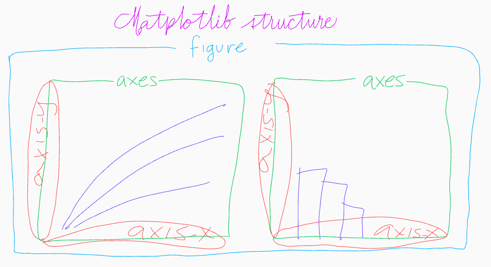

import numpy as np
import pandas as pd
import matplotlib.pyplot as plt
import seaborn as sns
import matplotlib.colors
diamonds = sns.load_dataset(
"diamonds", cache=True, data_home=None
).sample(5000)
# You can uncomment this line to change the style of the graphs.
# plt.style.use('ggplot')Data-vis
Introducción a matplotlib
Matplotlib
Matplotlib es una herramienta versátil y robusta para crear gráficos de alta calidad y personalizables. Aunque es una biblioteca de Python, también se puede usar en otros entornos como Jupyter Notebook. Es compatible con paquetes comunes de análisis de datos como Pandas y NumPy, y sirve como base para paquetes más avanzados utilizados para visualización y análisis, como Seaborn, HoloViews, Basemap, GeoPandas y Canopy.
Cuando se usa Matplotlib localmente, se recomienda instalarlo a través de un gestor de paquetes de Python, como el conocido “pip”. Puedes hacer esto ejecutando el comando “pip install matplotlib” en tu terminal o símbolo del sistema, como se muestra en la imagen. Si estás trabajando en un entorno basado en la nube, también necesitarás instalar los paquetes necesarios según se muestra.
Primeros pasos
Matplotlib es una biblioteca utilizada para crear visualizaciones y gráficos en Python. Después de instalar la biblioteca, necesitas importarla a tu entorno de trabajo. Es importante entender que Matplotlib trabaja con dos componentes principales o “zonas de interacción”:
Figura: Este es el contenedor de nivel superior que engloba todos los elementos, actuando esencialmente como la “ventana” que contiene el gráfico. Puedes encontrar más detalles en el módulo matplotlib.figure.
Ejes: Los ejes contienen los elementos de la figura y te permiten controlar aspectos como la representación gráfica, los ejes, la apariencia y más. Puedes encontrar información detallada sobre los ejes en el módulo matplotlib.axes.
Matplotlib proporciona tres formas de usar la biblioteca:
Usando el módulo pylab: Importando la biblioteca con el comando from pylab import *, obtienes un estilo similar a MATLAB. Este enfoque es adecuado para pruebas rápidas e interacciones en línea de comandos, aunque generalmente se recomienda menos para un uso general.
Usando el módulo pyplot: Esta es una interfaz basada en estado para Matplotlib, también similar a MATLAB. Automatiza la creación de las instancias necesarias para dibujar el gráfico y se recomienda tanto para gráficos interactivos como estáticos. Puedes encontrar más información y una lista de funciones en el módulo matplotlib.pyplot.
Usando una interfaz orientada a objetos: Este es el método más complejo pero ofrece más control. Permite la generación de gráficos avanzados porque tienes un mayor control sobre el código para crear instancias y aplicar métodos a ellas. Este enfoque es ampliamente recomendado para la generación de gráficos no interactivos y se puede integrar fácilmente en funciones y scripts dentro de proyectos más grandes.

Usando una interfaz orientada a objetos: Este es el método más complejo pero ofrece más control. Permite la generación de gráficos avanzados porque tienes mayor control sobre el código para crear instancias y aplicar métodos a ellas. Este enfoque es ampliamente recomendado para la generación de gráficos no interactivos y puede integrarse fácilmente en funciones y scripts dentro de proyectos más grandes.

Further reading
Visit the The Python Graph Gallery for inspiration.
Visit the matplotlib documentation, there are learning sources for begginers and advanced users.
Read the complete guide of Kaggle. It can be helpful.
Download the Datacamp matplotlib cheat sheet

Conecptos básicos
Plot
x = diamonds["carat"]
y = diamonds["price"]/1000
z = diamonds["cut"]plt.plot(x, y, color = 'b', marker = ".", linestyle = "none")
plt.show()
plt.close()plt.plot(x, y, 'b.')
plt.show()
plt.close()
plt.plot(x, y, 'rx')
plt.show()
plt.close()plt.plot(x, y, 'go')
plt.plot(y, x, 'go')
plt.show()
plt.close()Histogram
plt.hist(x)
plt.show()
plt.close()Scatterplot
plt.scatter(x, y)
plt.show()
plt.close()Pie
z_count = z.value_counts()
plot_01 = plt.pie(z_count, labels=z_count.index)
plt.show()
plt.close()plot_01 = plt.pie(z_count)
plt.plot(x, y, 'b.')
plt.show()
plt.close()Barplot
plt.bar(z_count.index, z_count)
plt.show()
plt.close()Boxplot
plot_01 = plt.boxplot(x)
plt.show()
plt.close()Subplot
# subplot
# # de filas
# # de columnas
# índice
plt.subplot(1, 2, 1)
plt.plot(x, y, 'r.')
plt.subplot(1, 2, 2)
plt.hist(y)
plt.show()
plt.close()Uso orientado a objetos
fig = plt.figure()
axes = fig.add_axes([0.1, 0.1, 0.8, 0.8])
axes.plot(x, y, "b.")
plt.show()
plt.close()fig = plt.figure()
axes = fig.add_axes([0.1, 0.1, 0.4, 0.5])
axes.plot(x, y, "gv")
plt.show()
plt.close()fig = plt.figure()
axes1 = fig.add_axes([0.1, 0.1, .65, 0.65])
axes1.scatter(x, y)
axes2 = fig.add_axes([0.8, 0.1, 0.15, 0.65])
axes2.boxplot(x)
axes3 = fig.add_axes([0.1, 0.8, 0.65, 0.15])
axes3.boxplot(y, vert=False)
plt.show()
plt.close()cut_groups = diamonds.groupby("cut")
fig = plt.figure()
axes = fig.add_axes([0.1, 0.1, .8, 0.8])
for group_name, group_df in cut_groups:
axes.scatter(group_df["carat"], group_df["price"], label = group_name, linestyle = "", marker = ".")
plt.legend()
plt.show()
plt.close()Subplots no es subplot
fig, axes = plt.subplots(nrows = 1, ncols=2)
axes[0].plot(x, y, 'b.')
axes[1].plot(x, y, 'ro')
plt.show()
plt.close()colors = {'Fair':'blue', 'Good':'orange', 'Very Good':'green', 'Premium':'red', 'Ideal':'purple'}
fig, ax = plt.subplots()
grouped = diamonds.groupby('cut')
for key, group in grouped:
group.plot(ax=ax, kind='scatter', x='carat', y='price', label=key, color=colors[key])
plt.legend()
plt.show()
plt.close()fig, [ax1, ax2] = plt.subplots(nrows = 1, ncols=2, sharey = True)
ax1.plot(x, y, 'b.')
ax2.plot(x, y, 'ro')
plt.show()
plt.close()x0 = np.linspace(0, 5, 11)
y1, y2, y3, y4, y5, y6 = np.sin(x0), np.cos(x0), np.tan(x0), x0, x0**2, x0**3
fig, [[ax1, ax2, ax3], [ax4, ax5, ax6]] = plt.subplots(nrows = 2, ncols=3)
ax1.plot(x0, y1)
ax2.plot(x0, y2, 'ro')
ax3.plot(x0, y3, 'gD')
ax4.plot(x0, y4)
ax5.plot(x0, y5, 'ro')
ax6.plot(x0, y6, 'gD')
fig.tight_layout()
plt.show()
plt.close()Información de la figura
fig = plt.figure()
axes1 = fig.add_axes([0.1, 0.1, .65, 0.65])
axes1.scatter(x, y)
axes2 = fig.add_axes([0.8, 0.1, 0.15, 0.65])
axes2.boxplot(x)
axes3 = fig.add_axes([0.1, 0.8, 0.65, 0.15])
axes3.boxplot(y, vert=False)
axes1.set_xlabel("Carat")
axes1.set_ylabel("Price")
axes2.set_xticks([])
axes2.set_yticks([])
axes3.set_xticks([])
axes3.set_yticks([])
plt.show()
plt.close()fig, [ax1, ax2] = plt.subplots(nrows = 2, ncols=1)
ax1.plot(x0, y1, 'g', label="sen(x)")
ax1.set_title("Seno")
ax1.set_xlabel("x")
ax1.axhline()
ax1.legend()
ax2.plot(x0, y2, 'r', label="$cos(x)$")
ax2.axhline()
ax2.set_title("Coseno")
ax2.set_xlabel("x")
ax2.legend()
fig.tight_layout()
fig.set_figwidth(20)
plt.show()
plt.close()plt.subplot(2, 1, 1)
plt.plot(x0, y1, 'g', label="sen(x)")
plt.title("Seno")
plt.xlabel("x")
plt.axhline()
plt.legend()
# plt.legend(bbox_to_anchor = (1.3, 0.5))
plt.subplot(2, 1, 2)
plt.plot(x0, y2, 'r', label="$cos(x)$")
plt.axhline()
plt.title("Coseno")
plt.xlabel("x")
plt.legend()
plt.tight_layout()
plt.show()
plt.close()Decoración
print(plt.style.available)['Solarize_Light2', '_classic_test_patch', '_mpl-gallery', '_mpl-gallery-nogrid', 'bmh', 'classic', 'dark_background', 'fast', 'fivethirtyeight', 'ggplot', 'grayscale', 'seaborn-v0_8', 'seaborn-v0_8-bright', 'seaborn-v0_8-colorblind', 'seaborn-v0_8-dark', 'seaborn-v0_8-dark-palette', 'seaborn-v0_8-darkgrid', 'seaborn-v0_8-deep', 'seaborn-v0_8-muted', 'seaborn-v0_8-notebook', 'seaborn-v0_8-paper', 'seaborn-v0_8-pastel', 'seaborn-v0_8-poster', 'seaborn-v0_8-talk', 'seaborn-v0_8-ticks', 'seaborn-v0_8-white', 'seaborn-v0_8-whitegrid', 'tableau-colorblind10']plt.style.use("ggplot")
fig, [ax1, ax2] = plt.subplots(nrows = 2, ncols=1)
# ax1.plot(x, y1, color="#ff00ff", alpha = 0.1, linewidth = 10)
ax1.scatter(x0, y1, label="sen(x)", color="#ff00ff", alpha = 1, linewidth = 1, marker = "p")
ax1.set_title("Seno")
ax1.set_xlabel("x")
ax1.axhline(color= "#9999aa")
ax1.legend()
ax2.plot(x0, y2, label="$cos(x)$", color="#ff0000")
ax2.axhline(color= "#9999aa")
ax2.set_title("Coseno")
ax2.set_xlabel("x")
ax2.legend()
fig.tight_layout()
fig.set_figwidth(20)
plt.show()
plt.close()Ejercicio
Genera las siguientes gráficas.